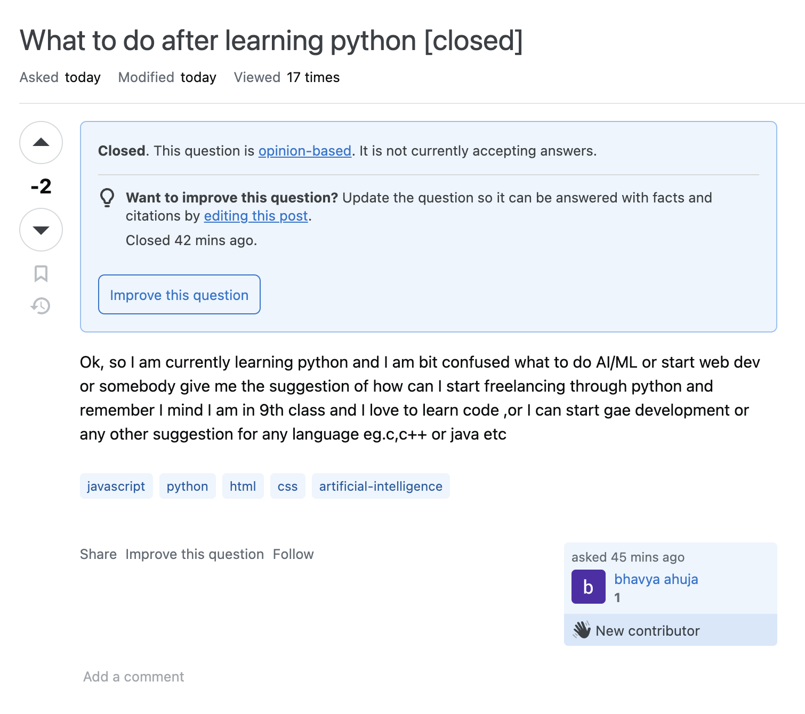
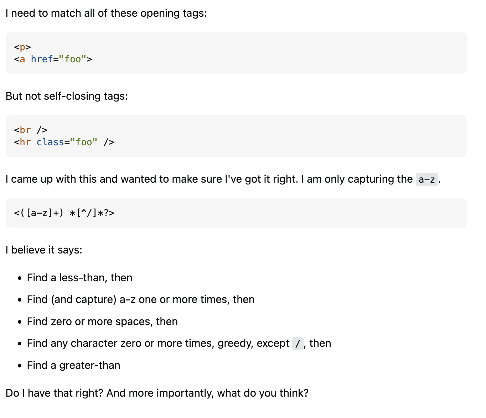
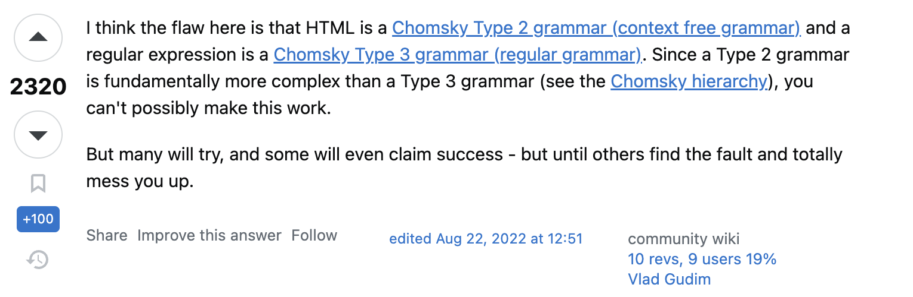

Let’s start this with a question, what makes you want to become a software engineer, a developer, or more generally the field of computer science? Is it because of the high salary? Or the remote work? Or maybe the career options you could take after graduating with the degree? Despite all of those benefits that people will think about in the field, software engineering also comes with some cons. One of the most annoying things you will have to face is being stuck with a problem. Whether it could be a bug from a code or the algorithm isn’t what you want. Lucky for our generation, the internet has all the solutions! or does it?
One of the most popular sites that a lot of software engineers use is through stack overflow whenever they run into a problem. The site contains a vast amount of knowledge a junior software engineer could have asked for. From algorithm to coding, from Java, HTML or CSS, etc. Many posts on the site could answer your question. But what would you do if there was no solution to the problem that you were looking for? One of the easiest ways to get help is to ask. However, the crucial aspect lies in the manner of asking these questions and turning them into “smart questions”.
Let’s take a step in the opposite direction for this question. What is a not-smart question? Here is an example: 
So what is not so smart here? The question here is not really “appropriate”. We don’t know anything about the author besides they are learning about Python but the question is “How can I start freelancing through Python or can I start game development”. The author did not give any information about their coding background, their interest, and how they feel about Python. Instead, they are giving some unnecessary information such as “Remember I mind I am in 9th class”. The key here to help improve this is to do more research before you ask the question. Authors could simply search the requirement language stack for specific fields they might have an interest in and it would give them a language stack in which they could take a look and decide if that is what they wanted or not. As a result, people did not know how to respond to this question and it is still on hold for answer.
Now let’s go back to our main topic here “What is a smart question?”. At this point, I believe we could all agree that before asking any questions, we as a good software engineer should do our own “homework”. Using sources such as W3W, Mdn Web doc or maybe just the Documentation from the framework that you are using might help. Another helpful tip is to provide the code or algorithm that you are working on, your attempt, and the output.
As an example for a good question here is one: 
In this particular question, it shows that the author has done their homework and uses the right tone to ask for help. As a result, the author received many good or “smart” answers : 
##Important Key: Asking other online sources and maybe your skilled friend could help you get started and might point you in the right direction. Make sure to complete your “homework” before asking and using an appropriate tone with the question will help you attract more “smart” answers.